浅析收单业务
收单业务
什么是收单业务
收单业务, 是指收单机构向商户提供的银行卡交易, 本外币资金结算等服务. 通俗点说, 就是消费者在商户刷卡消费, 收单机构通过银行将消费者的资金在规定周期内结算给商户, 并从中分润一定比例的手续费.
从 《银行卡收单业务管理办法》中银行卡收单业务定义来看, 银行卡收单业务, 是指收单机构与特约商户签订银行卡受理协议，在特约商户按约定受理银行卡并与持卡人达成交易后，为特约商户提供交易资金结算服务的行为。收单业务常规区分线下收单和线上收单；
一般的收单业务涉及的主体分为四类，分别是：持卡人、特约商户、银行、收单机构。
传统卡收单一个典型信息流如下:
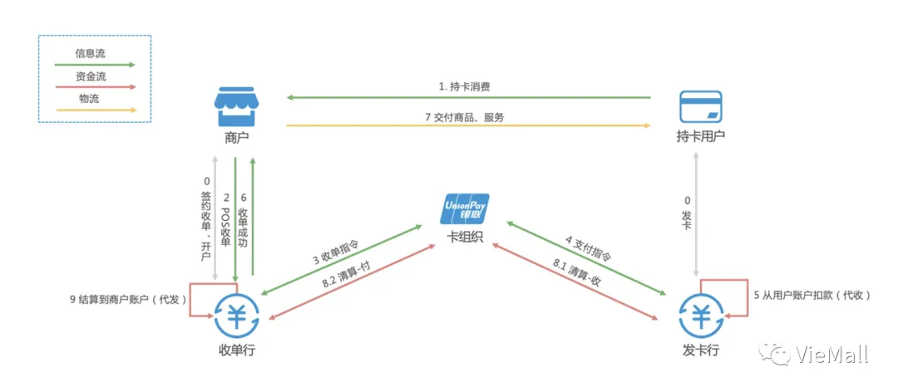
涉及的各个角色说明:
持卡用户
就是消费者, 银行借记卡或者信用卡的持有者.
发卡行
发卡行是向持卡人（即用户或消费者）发行各种银行卡，并通过提供各类相关的银行卡服务收取服务费，是银行卡市场的发起者和组织者，是银行卡市场的卖方。
收单机构（银行也可以是收单机构，收单机构为银行时，叫收单行）
负责特约商户的开拓与管理、授权请求、账单结算等活动，其利益主要来源于特约商户交易手续费的分成、服务费。收单机构也可以是第三方收单机构，如：连连、拉卡拉、银盛等。
收单行
负责分发请款指令，同时存管用户备付金的银行。即用户付款后，需要有一个银行账户来存放用户所支付的资金，该备付金存管银行就是收单行。
银行卡组织
建立、维护和扩大跨行信息交换网络，通过建立公共信息网络和统一的操作平台，向成员机构提供信息交换、清算和结算、统一授权、品牌营销、协助成员机构进行风险控制及反欺诈等服务，如银联电子等。
线下收单
线下收单，是指收单机构提供POS机、自助消费终端等线下设备, 持卡人通过这些设备刷卡消费, 完成交易.。线下收单机构一般包括: 银行收单、银联商务和第三方收单支付(例如拉卡拉、快钱等).
中国线下收单业务产业链条结构
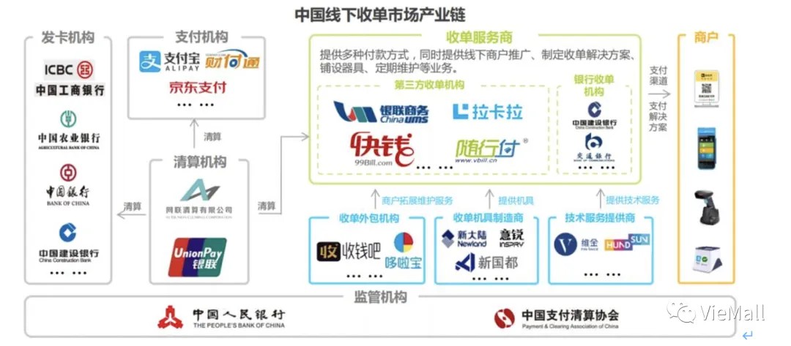
商业银行收单
商业银行的主要业务范围包括吸收公众、企业及机构的存款、发放贷款、票据贴现及收单业务等。在线下收单业务中，商业银行即是发卡行，又是收单行，同时还是收单机构。首先，商户在银行（收单行）开立账户，银行为商户安装POS机，持卡人在商户进行购物消费时通过刷卡方式支付款项，收单行负责将扣减一定手续费后的消费资金记入商户账户。一般模式上会有直连&间连模式。
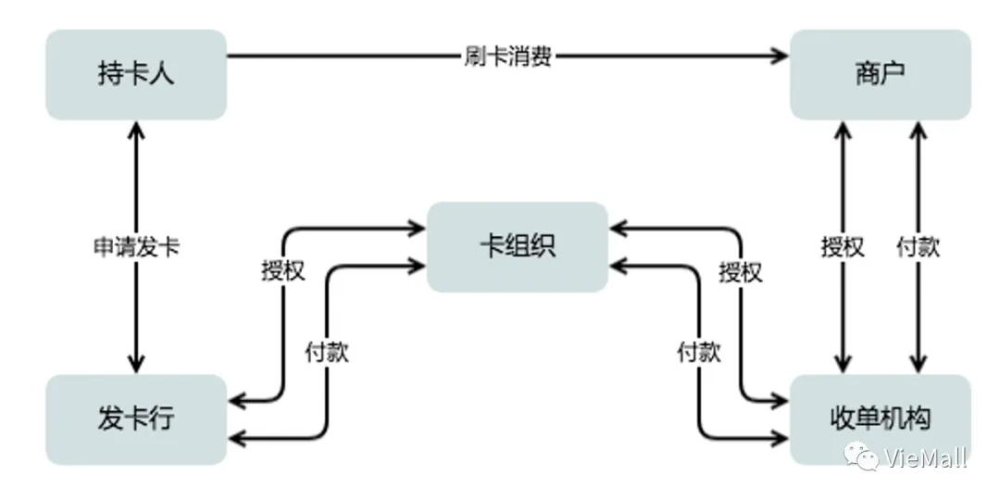直连POS, POS终端直接与银联系统相连接. 持卡人的消费请求会通过银联电子中转到发卡行处理, 银联电子T+1做跨行的清结算, 即展示的信息流. 发卡行、收单行、银联[卡组织]会一起分润手续费, 传统比例是 7:2:1. 如果发卡行就是收单行, 则是 9:1, 发卡占90%。
间连POS, POS连到提供机具的商业银行主机系统. 如果发卡和收单不同行, 和直连POS基本没区别. 如果发卡和收单是同一家银行, 可以不用走银联电子中转, 这里费率会有所变化, 因为只有发卡行一家收手续费。
当持卡人持银行卡（发卡行A）在POS机上跨行消费的时候，扣款指令先从POS终端机传到收单行B的主机系统，，再转到银联进行跨行转接，再通过银联电子进行行间转接给发卡行B，最后发卡行负责划扣资金。业务流程如下图所示：
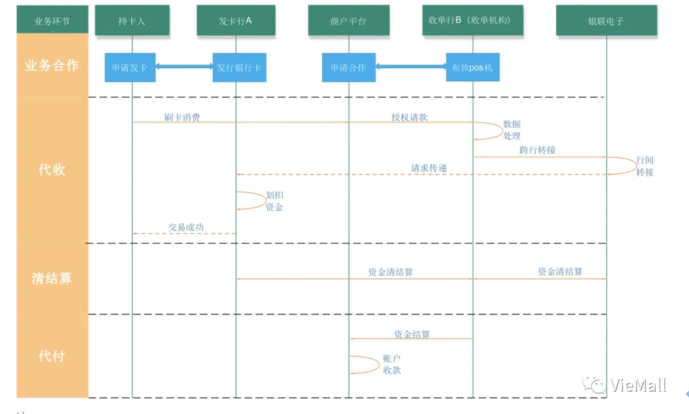
如果发卡行与收单行是同一家银行，则不需要银联电子转接，只需进行行内数据处理及清结算即可。以信用卡刷卡为例。
第一阶段：假设海底捞与工行合作，在店内布放了一台工行的POS机（工行是收单行，也是收单机构），用户消费时，用农行的信用卡（农行为发卡行）刷卡消费，用户在刷卡小票上签字后交给海底捞，就完成了交易。
第二阶段：在银联的清算时间，会对该笔交易进行银行间清结算，工行就会通过银联向农行要该笔资金，并向发卡行农行支付交换费，银联在这个过程中收取手续费分成。
第三阶段：海底捞把小票交给收单行工行，工行与海底捞对该笔交易进行结算，扣完手续费后，把资金结算给海底捞。
一般以上三方的手续费分成为，发卡行（农行）：收单行（工行）：银联电子=7:2:1 。如果发卡行与收单行是同一家银行，则上面工行向海底捞收取的手续费中的九成归工行，另一成支付给银联电子。
银联商务收单
中国银联于2002年成立于上海，旗下有银联商务（主营线下POS收单业务）、 银联电子（主营互联网支付业务以及解决银行卡联网通用的问题，即集成各大银行的网关接口，实现银行之间的互联互通，解决跨行交易和清结算的问题）、银联数据服务有限公司（为金融机构提供银行卡数据处理服务）、银行卡检测中心、中国金融认证中心（即CFCA，通过为发放数字证书，为网上银行、电子商务、电子政务提供安全认证服务）等子公司。
当银联商务作为收单机构时，由银联商务与商户进行签约，收单主体是银联商务。一般是由银联商务与商户进行签约，收单主体是银联商务. 银联商务会为商户在银行(即收单行)开设一个收款账户, POS的消费请求会通过银联商务到银联电子, 再分发到发卡行处理, 最终会结算到商户的收款账户内. 同样, 分润手续费的各方也包括了发卡行、收单行和银联.
以下是银联商务作为收单机构时的业务流程图：
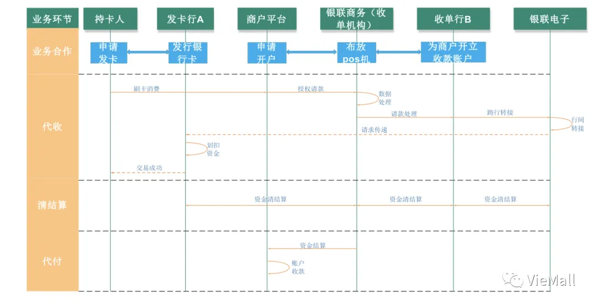
银联的存在就是为了解决跨行交易的问题，所以当银联作为收单机构时，指令直接传到银联，再传给发卡行扣款。在银联的清算日，银联会与发卡行、收单行就该笔交易进行清结算。当然，这个过程中，在把资金打给收单行之前，会扣除商户的手续费，发卡行，银联，收单行会对手续费进行分成。
第三方收单机构
第三方机构需要获得央行发布的支付许可证， 商户与第三方收单机构签约. 一般来说, 第三发收单机构需要在合作银行开设备付金存管账户, 和银行间做清结算用. 信息流中, 如果发卡行就是合作银行, 则银行内部处理, 否则通过银联转发.这里, 会有银联、第三方支付收单机构、发卡行、收单行四方分润手续费, 即常说的“四方模式”.
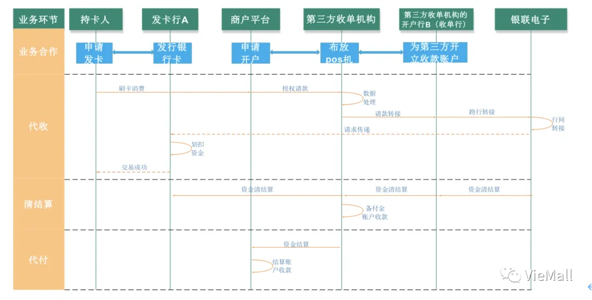
第三方收单机构把资金打到商户在签约时指定的银行账户上，一般称之为商户的结算账户，是商户在任何一家普通银行开立的。手续费将会分配给收单机构、发卡行、清算机构和其他服务提供商。
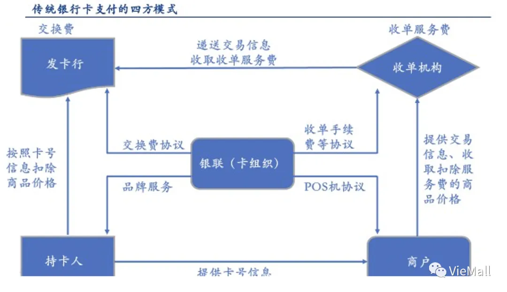线上收单
线上收单, 是指收单机构提供基于(移动)互联网的支付平台, 持卡人通过网络支付平台完成刷卡消费, 完成交易. 线上收单机构国内最大的两家: 支付宝和微信支付.
常见模式：
在线上时，第三方支付平台集成了各大银行的网关，本身既是收单机构，又是收单行，因为它已经可以不用再像线下收单时，需要借助开户行（收单行）的力量，利用银联电子进行行间转接了，第三方支付平台集成了各大银行的网关之后，第三方支付平台本身相当于一个路由器，对用户所选的发卡行进行识别后，把请款请求分发给对应的发卡行，这样就可以取代收单行和银联电子进行行间转接了。
目前银行开放给第三方机构（包括第三方支付平台）的接口大概有四类：POS收单接口，网银接口，快捷支付接口和代扣接口。
第三方支付平台+网银接口
第三方支付平台连接网银接口，用户在支付时，实际上第三方支付平台仅仅充当了支付网关的作用，可以理解成是银行的代理，所以并不存在线上收单业务中的发卡行与第三方支付平台的开户行是同行还是异行的问题。使用网银支付，用户得先确保已经开通了网银。
业务流：
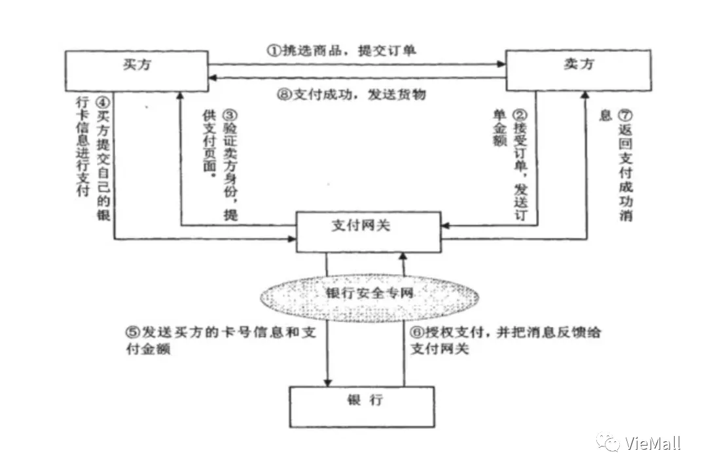资金流：
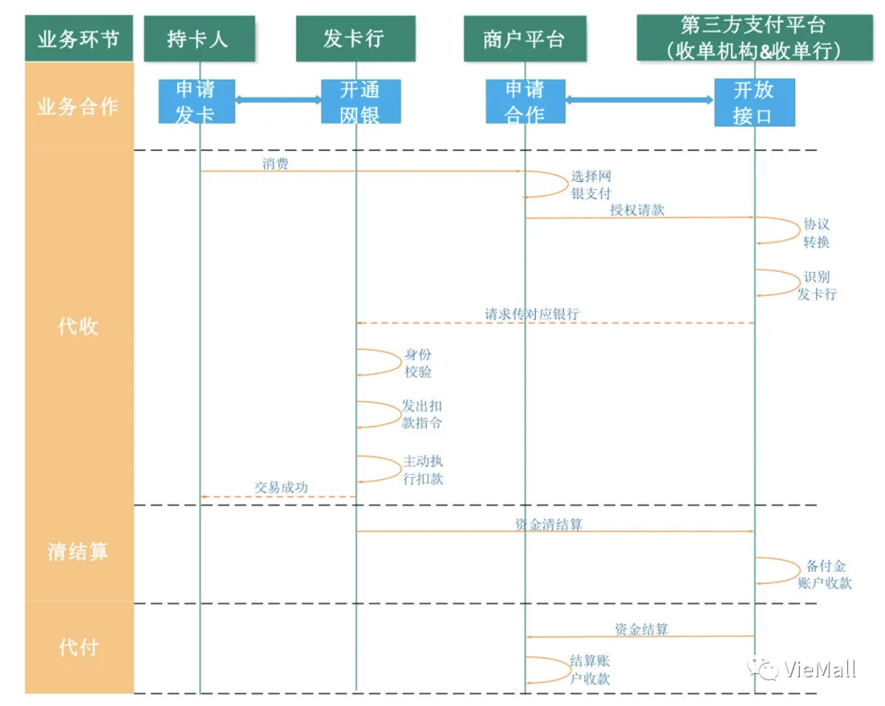
第三方支付平台+快捷支付接口
用户使用快捷支付之前，得先在第三方支付平台完成绑卡操作，不需要开通网银。 快捷支付接口开放给第三方支付平台之后，用户只需要在第三方支付平台完成身份校验，第三方支付机构就可以将用户银行卡里的资金划扣出来，而无需再输入银行卡密码（现在也有一些第三方支付平台会要求用户绑卡时输入银行卡密码，这个得看支付平台与银行的合作方式，不同银行标准不一样），用户使用快捷支付时，本来应该由银行完成的校验用户身份以及发起扣款指令的工作，现在由第三方支付平台代替银行来完成，用户在第三方平台身份校验成功后，扣款指令会传递给发卡行，然后银行只是被动的执行这个扣款指令，把用户的资金划扣，这就是快捷支付接口与网银接口的本质区别。连接了快捷支付接口，相当于第三方支付平台可以随时划扣用户的资金，如果支付平台想做违法乱纪之事，是可以轻而易举在用户不知情的情况下把用户资金从银行卡中划走的。
业务流：
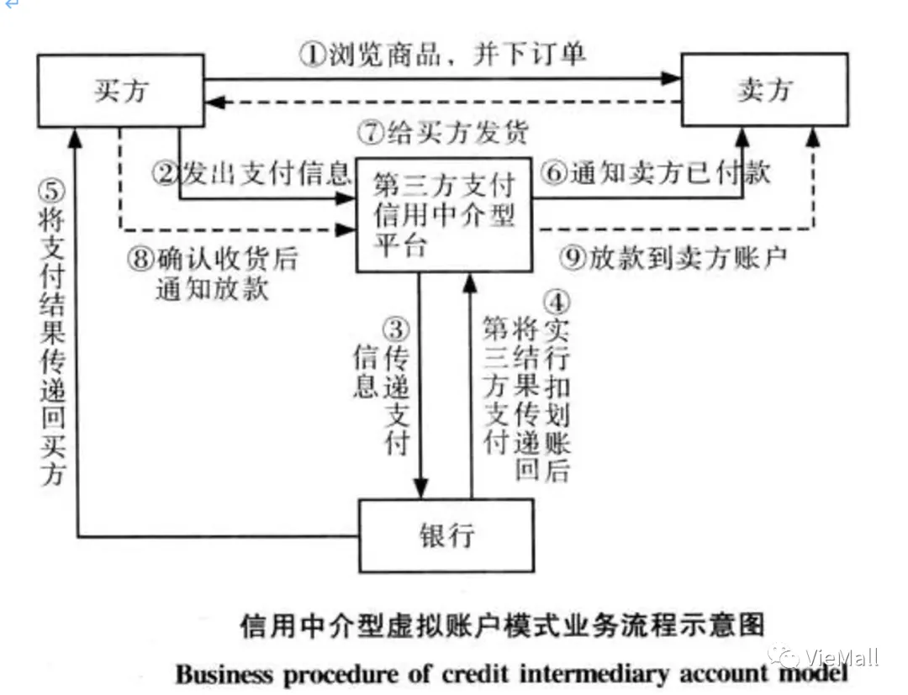资金流：
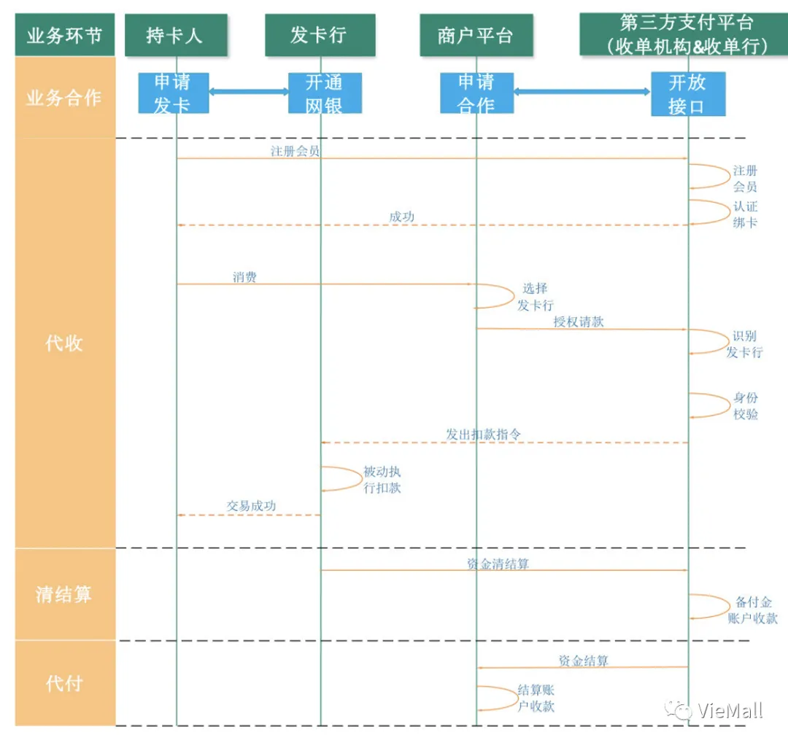
银联电子线上收单业务
银联电子是中国银联旗下子公司，专门用于在线收单业务拓展的线上支付平台，与第三方支付机构无本质区别，主要的区别在于代付环节，银联电子不设资金池，所以不存在代付这个环节，在银联的清算时间，完成之后，用户支付的款项就直接打给商户的结算账户里面去了。
在收单的结算流程中，很容易出现一种“单边账”的情况，单边账，即一方的账目发生变化，而另一方没有，那么随之而来的就是，钱，哪去了?
在此之前，先介绍两个概念，即长款和短款（只按照POSP系统的数据归纳概念）
长款：上游给我的款项比我给下游的多（在不考虑分润及跳码的情况下）
短款：上游给我的款项比我给下游的少（同上）单边账有百分之九十九点九九是长款，如果出现了短款情况，就是灾难，建议彻查POSP系统日志，仔细排查上下游对账单，先说下长款和短款：
（1）支付长款：银行钱多了就是长款，即金额差错时，订单金额 < 对账文件金额，或者单边帐订单无对账文件有。
（2）支付短款：银行少钱了就是短款，即金额差错时，订单金额 > 对账文件金额，或者单边帐订单有对账文件无。上面说了，其实长款和短款也要分两种情况，一是对账的时候订单对账文件和资金对账文件都有，金额差异造成长款和短款；二是对账的时候订单对账文件和资金对账文件一边有一边无，即所谓的单边帐造成的长短款。
第一种情况很少遇到，一般情况下支付联机时实际支付金额和联机银行回显金额不相等，订单就支付失败了，也不会拿去对资金账。如果联机时两边金额是相等的，而在T+1对账时对出金额差异，这一般就是银行的问题了。线下找银行去。
第二种情况，先说短款，T+1对账时，对出订单有对账文件无，一般不会立即出短款，而是先标记为“存疑”，因为有的银行会在T+2时提供对账文件。待T+2的对账文件来了，再把之前存疑的订单拿来对。万一到了设定了时间点，还是订单存疑的话，那么就要确认为短款了。（银行估计早就要来找你了）；再说长款，T+1对账时对出订单无支付文件有时，这会立即出长款的。这时候要进行补单的操作，所谓补单即通过支付流水关联全局的订单，关联到了，将订单的支付状态改为支付成功，更新银行回写时间等等。如果没关联到，确实没有订单，那么要线下找银行去处理了。
参考文档：
 微信
微信